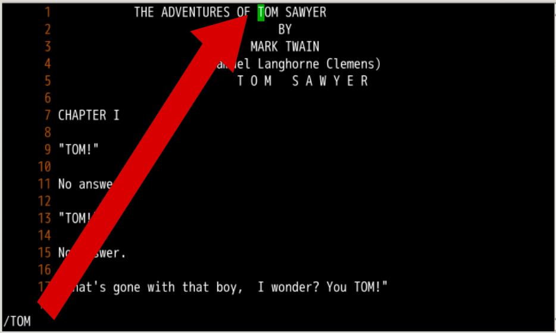
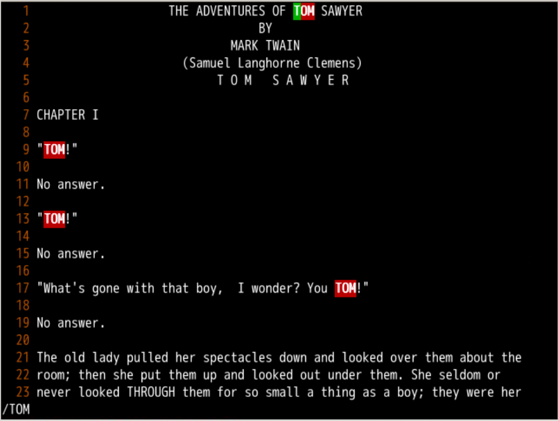
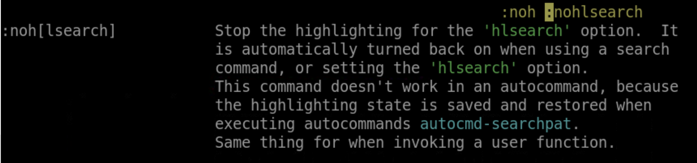
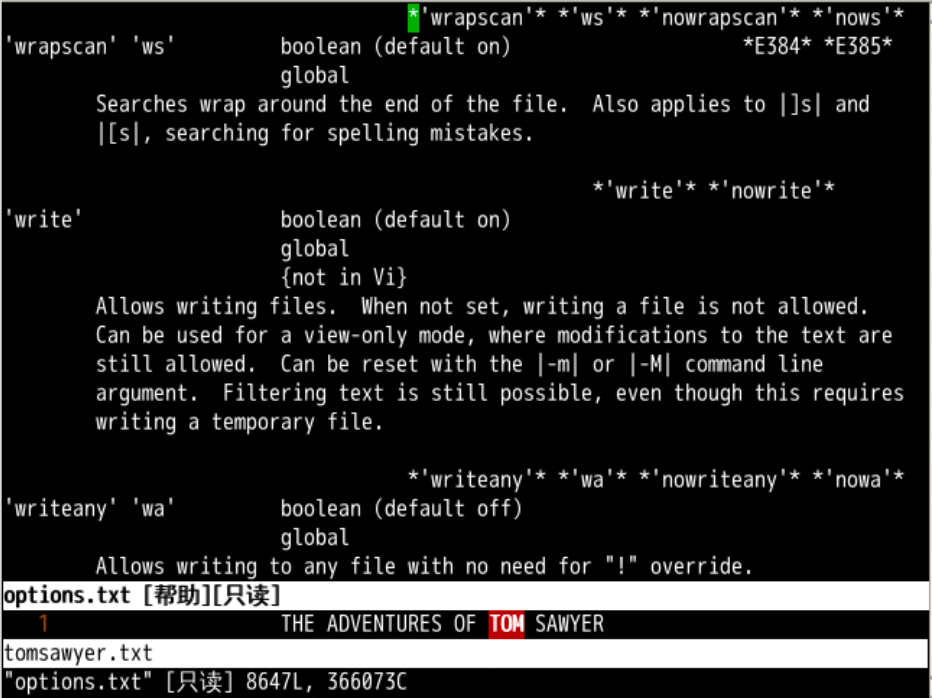

%不成对括号间跳转
[( 跳转到上一个没配对的 (]) 跳转到下一个没配对的 )[{ 跳转到上一个没配对的 {[} 跳转到下一个没配对的 }函数间跳转
]m 下一个函数开头[m 上一个函数结尾]M 下一个函数开头[M 上一个函数结尾#if、#else、#endif 没有配对的[# 上一个没有配对的 #if、#else]# 下一个没有配对的 #else、#endif
注释的头尾
[/、[*上一个注释/* .... */ 的头]*、]/下一个注释/* .... */ 的头
这次我想自定义跳转，就是查找某些东西
tomsawyer.txtvi -u NONE tomsawyer.txt:se nu: 等待输入命令一样/TOM 会从光标位置向后查找 TOMTOM 的位置h / 查阅手册
:set hlsearch:set hls:hi Search ctermbg=red ctermfg=black 注意大小写/TOM 再次搜索 TOM:h 'hls' 查找搜索高亮手册
:set nohlsearch 把搜索高亮的开关关掉:set hls:noh[lsearch]
count 翻倍:h n 查阅相关手册:set wrapscanw[rap]s[can] 可以简写为 ws:set now[rap]s[can] 可以简写为 :set nows
?TOM 就可以从后往前查询 TOM?TOM 配合 N 就是往前查找wrapscan 让他可以从头再来[count] 可翻倍hls 让搜索结果高亮noh 取消本次高亮wrapscan 可以从头搜索